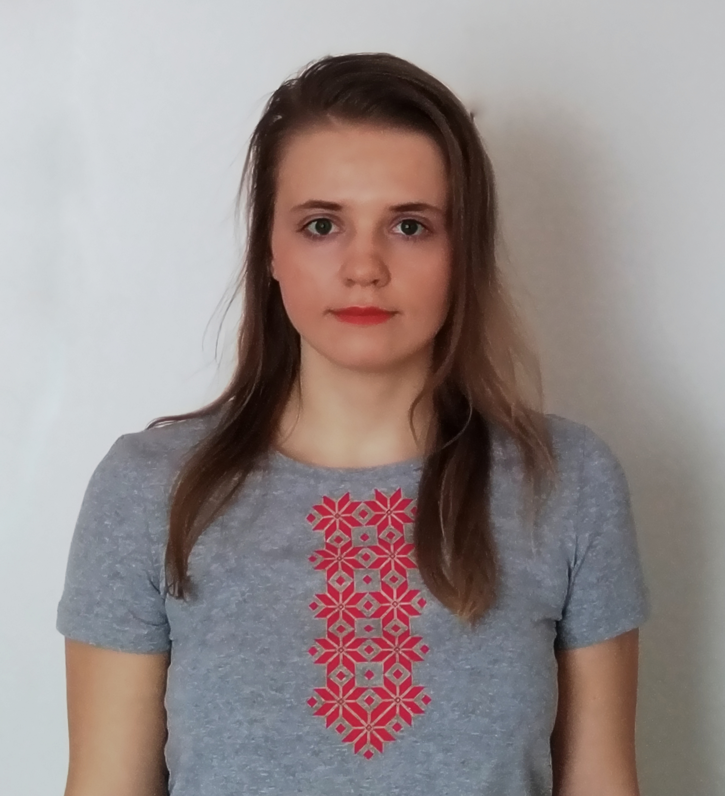

I am amazed of computer engineering possibility. People who made internet and computer engineering created new world and have changed idea of life. Work in this scope is very interesting and exciting for me.
I use Linux as a main operating system on my own laptop.
Skills:
- Skills JavaScript, React
- Skills PHP, Laravel
- Skills HTML, CSS
- Skills SQL, MongoDB
- Skills Git
- Expertise Figma
- Expertise Photoshop
Experience:
Piggy
Current project
Framework, library:
- React
- Axios
- laravel
Ecology
December, 2020 - February, 2021
Framework, library:
- React
- Mobx
- Axios
- Google APIs
- Validatorjs
- Leaflet
- MongoDB
COVID dashboard
December, 2020
Framework:
- React
English for kids
December, 2020
Language:
- JavaScript
Game puzzle
November, 2020
Language:
- JavaScript
Momentum
October, 2020
Language:
- JavaScript
Extension Chrome
March, 2020 - May, 2020
Language:
- JavaScript
Education:
- School of Business and Management of Technology of BSU, specialty web designer, programmer (years 2015-2018)
- The Rolling Scopes, cours «JavaScript/Front-end» (years 2020 - 2021) certificate